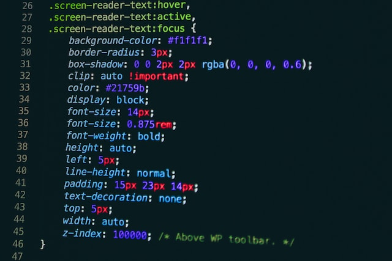

Skill

HTML
HTML adalah untuk mengelola serangkaian data dan informasi sehingga suatu dokumen dapat diakses dan ditampilkan di Internet melalui layanan web.

CSS
Css adalah singkatan dari Cascading Style Sheet yang dipergunakan untuk menentukan tampilan dan format pada sebuah website.

Bootstrap
Bootstrap merupakan salah satu framework CSS yang digunakan khusus untuk suatu pengembangan front-end website.

PHP
PHP (Hypertext Preprocessor) adalah bahasa skrip yang dapat ditanamkan atau disisipkan ke dalam HTML.

Laravel
Laravel merupakan framework PHP yang open-source dan berisi banyak modul dasar untuk mengoptimalkan kinerja PHP dalam pengembangan aplikasi web.